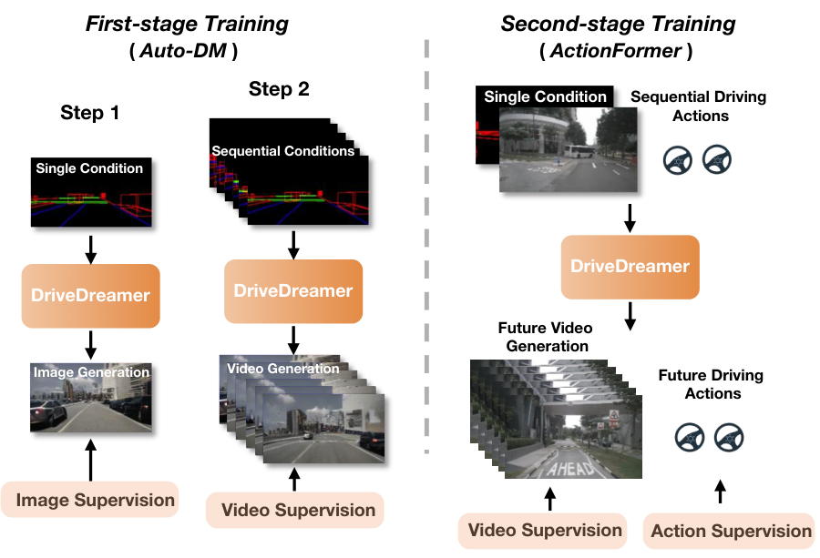
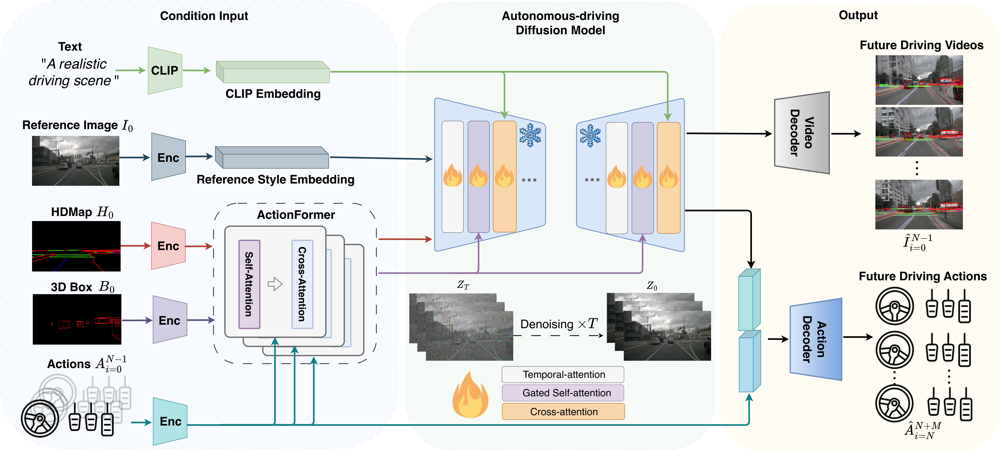
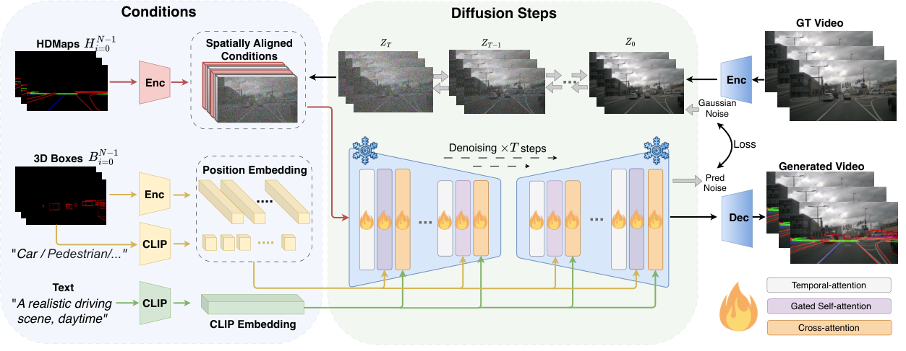
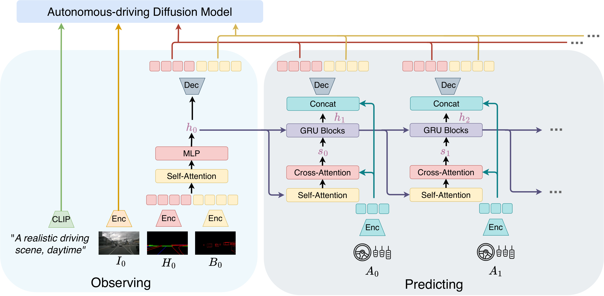
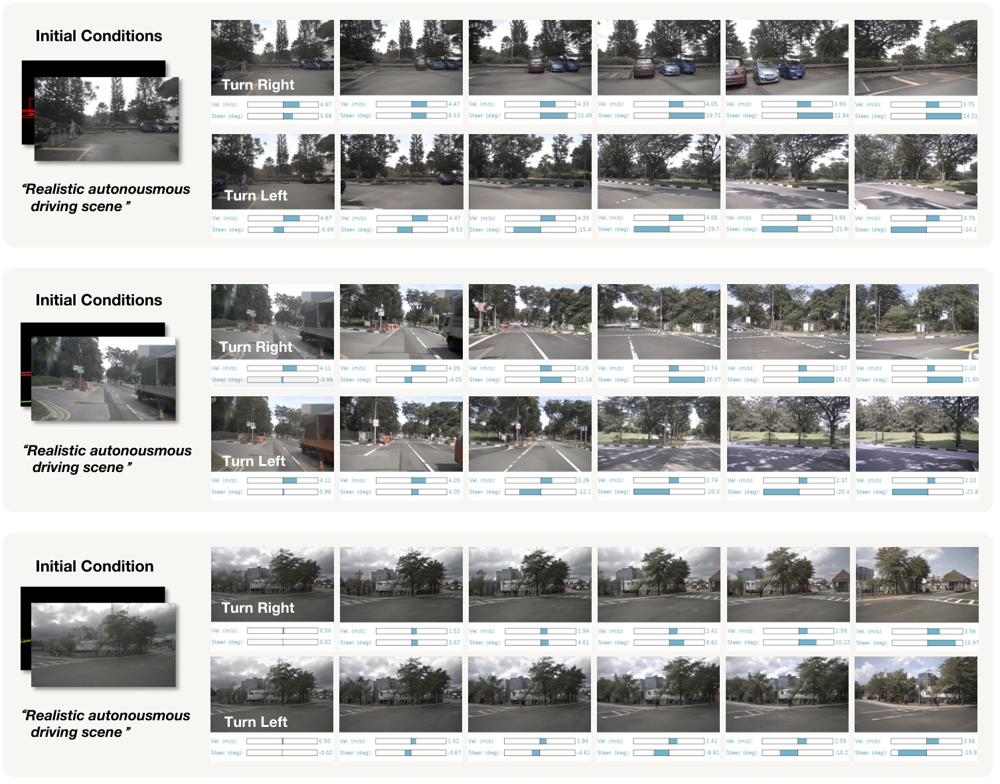

0. 页面头部：论文身份卡片
| 论文 | DriveDreamer: Towards Real-World-Driven World Models for Autonomous Driving |
|---|---|
| 作者 | Wang, Xiaofeng；Zhu, Zheng；Huang, Guan；Chen, Xinze；Zhu, Jiagang；Lu, Jiwen |
| 时间 | 2023/09/18 |
| 方向 | Diffusion world model / structured traffic condition |
| 核心贡献 | DriveDreamer 以真实驾驶场景为训练来源，用 HDMap、3D boxes、文本和动作作为结构条件，通过两阶段 diffusion pipeline 生成可控未来驾驶视频并辅助动作预测。 |
| 模型类型 | 以 HD Map、3D box、文本与动作作为结构化条件的扩散驾驶世界模型，并用 ActionFormer 预测未来交通结构。 |
| 输入 | 参考图像、HD Map、3D box、文本风格条件和驾驶动作。 |
| 中间表示 | ActionFormer rollout 未来地图/box 结构；Auto-DM 将结构条件、文本与噪声融合生成未来多视角视频。 |
| 输出 | 受结构与动作控制的未来驾驶视频，以及辅助的未来驾驶动作预测。 |
| 训练目标 | 两阶段训练：先学习结构条件图像生成，再学习时序与动作交互；核心为扩散去噪与动作预测损失。 |
| 代码与复现状态 | 是，项目页和代码公开；高：真实驾驶 diffusion world model 代表 |
1. 论文速览：用一页讲清楚价值
1.1 一句话贡献
DriveDreamer 以真实驾驶场景为训练来源，用 HDMap、3D boxes、文本和动作作为结构条件，通过两阶段 diffusion pipeline 生成可控未来驾驶视频并辅助动作预测。
1.2 论文专属关键词
real-world-driven world model、diffusion model、Auto-DM、ActionFormer、HDMap condition、3D box condition、nuScenes、controllable video generation
1.3 技术定位
以 HD Map、3D box、文本与动作作为结构化条件的扩散驾驶世界模型，并用 ActionFormer 预测未来交通结构。
1.4 论文构建了什么
| 输入 | 参考图像、HD Map、3D box、文本风格条件和驾驶动作。 |
|---|---|
| 编码与融合 | ActionFormer rollout 未来地图/box 结构；Auto-DM 将结构条件、文本与噪声融合生成未来多视角视频。 |
| 输出 | 受结构与动作控制的未来驾驶视频，以及辅助的未来驾驶动作预测。 |
| 训练目标 | 两阶段训练：先学习结构条件图像生成，再学习时序与动作交互；核心为扩散去噪与动作预测损失。 |
1.5 核心结论与证据链
DriveDreamer 的核心是把世界模型从游戏/仿真环境搬到真实驾驶数据。第一阶段让 diffusion 模型学习 HDMap 和 3D boxes 等结构交通约束；第二阶段加入 ActionFormer 预测未来结构条件，再由 Auto-DM 生成未来视频，同时用多尺度 latent features 和历史动作预测未来 driving actions。论文报告 DriveDreamer 可生成与文本、结构条件和动作一致的视频；在 open-loop action generation 上平均 L2 轨迹误差约 0.29m，并且合成数据提升 FCOS3D mAP +0.7、BEVFusion mAP +3.0。
核心证据来自：多视角/时序一致性、结构与文本可控生成、动作交互视频和下游感知/规划数据增强。。证据边界是：定性一致性不能替代精确 3D 动力学；未来结构预测错误会系统性传递给视频。
2. 研究问题与动机：为什么需要这篇论文
2.1 核心问题与成功标准
世界模型若只在游戏/仿真中训练，缺少真实道路复杂性；但真实驾驶视频空间巨大，直接无约束生成容易失控。DriveDreamer 的假设是：用结构交通条件缩小搜索空间，把道路拓扑和 3D 目标布局作为生成骨架，再让 diffusion 负责视觉细节和时序未来。这样可以同时服务视频生成、动作交互和数据增强。
2.2 现有方法的具体不足
该论文针对的瓶颈不是笼统的“泛化不足”，而是：纯视频扩散难保持道路和 agent 几何；纯结构预测缺少可观察图像，DriveDreamer 用结构 rollout 约束视觉生成。
2.3 为什么不走显而易见的替代路线
纯视频扩散难保持道路和 agent 几何；纯结构预测缺少可观察图像，DriveDreamer 用结构 rollout 约束视觉生成。
3. 相关工作脉络：这篇论文从哪里来
3.1 技术家族与直接前作
DriveDreamer 连接 diffusion video generation、自动驾驶结构条件生成、world model for planning。与 GAIA-1 相比，它更强调 HDMap/3D box 结构约束和 diffusion pipeline；与 Drive-WM 相比，它不是重点解决多视角一致性和树搜索规划，而是用真实驾驶条件生成与动作预测展示世界模型能力。
3.2 本文新意属于表示、架构、训练还是评估
从技术地图看，本文的主要新意可概括为：以 HD Map、3D box、文本与动作作为结构化条件的扩散驾驶世界模型，并用 ActionFormer 预测未来交通结构。。它并非简单替换 backbone，而是围绕输入表示、中间信息流或评价方式重新定义了论文的核心问题。
4. 方法总览图：先看完整信息流
4.1 主框架图与机制

4.2 信息流一句话串联
输入：参考图像、HD Map、3D box、文本风格条件和驾驶动作。；中间处理：ActionFormer rollout 未来地图/box 结构；Auto-DM 将结构条件、文本与噪声融合生成未来多视角视频。；最终输出：受结构与动作控制的未来驾驶视频，以及辅助的未来驾驶动作预测。；训练约束：两阶段训练：先学习结构条件图像生成，再学习时序与动作交互；核心为扩散去噪与动作预测损失。
5. 方法详解：输入、表示、融合、解码、训练与部署
5.1 输入表示
参考图像、HD Map、3D box、文本风格条件和驾驶动作。。复现时首先要确保各模态的时间同步、坐标系、可见范围与训练时一致；任何一个上游输入偏移都可能被后续大模型放大。
5.2 编码器与融合设计
ActionFormer rollout 未来地图/box 结构；Auto-DM 将结构条件、文本与噪声融合生成未来多视角视频。
5.3 中间表示为何重要
中间表示决定模型保留何种几何、语义和时间信息。该论文的关键中间链路是：ActionFormer rollout 未来地图/box 结构；Auto-DM 将结构条件、文本与噪声融合生成未来多视角视频。。它让最终输出能够利用这些信息，但也把上游表示误差带入规划或预测。
5.4 解码、动作生成或未来预测
受结构与动作控制的未来驾驶视频，以及辅助的未来驾驶动作预测。
5.5 训练目标及副作用
两阶段训练：先学习结构条件图像生成，再学习时序与动作交互；核心为扩散去噪与动作预测损失。。这些目标直接约束对应监督输出，却不会自动保证真实闭环安全、跨域鲁棒性或因果可解释性。
5.6 训练阶段与数据风险
DriveDreamer 包括 ActionFormer 和 Auto-DM。给定初始帧 I0、HDMap H0、3D boxes B0 和动作历史，ActionFormer 在 latent space 预测未来道路结构特征；Auto-DM 接收空间对齐条件、位置条件和文本条件，通过 diffusion denoising 生成未来视频。两阶段训练先学习结构交通约束，再学习时序未来与动作交互。动作预测分支将 Auto-DM 的多尺度 latent features 与历史 action 融合，输出未来动作。
5.7 推理与部署流程
世界模型不是最终 planner；使用时仍需定义成本、从生成未来中选择动作并验证实时性。
6. 原论文图解：逐图拆解证据含义
7.1 Figure 1：Two-stage training pipeline of DriveDreamer.
7.2 Figure 2：Overall framework of DriveDreamer. The framework initiates w

7.3 Figure 3：Overall structure of the Auto-DM. Auto-DM takes three types

7.4 Figure 4：Overall structure of ActionFormer. The initial structural co

7.5 Figure 7：Visualizations of the generated multi-view video. Regions hi

7.6 Figure 9：Future driving video generation with driving actions interac

7. 实验与结果：把证据链拆开
7.1 数据集、任务与划分
实验围绕该论文的技术定位组织：以 HD Map、3D box、文本与动作作为结构化条件的扩散驾驶世界模型，并用 ActionFormer 预测未来交通结构。。需要特别区分离线预测、生成质量、开环规划与真实/仿真闭环，因为它们使用不同成功标准；本论文主要证据为：多视角/时序一致性、结构与文本可控生成、动作交互视频和下游感知/规划数据增强。
7.2 Baseline 为什么重要
论文的比较应围绕其技术定位理解：以 HD Map、3D box、文本与动作作为结构化条件的扩散驾驶世界模型，并用 ActionFormer 预测未来交通结构。。强 baseline 用来判断收益来自新增信息流、模型容量还是评估协议；仅与较弱旧方法比较不足以证明论文主张。
7.3 指标如何对应论文主张
本文实验所依赖的证据为：多视角/时序一致性、结构与文本可控生成、动作交互视频和下游感知/规划数据增强。。离线预测误差、生成质量、规划指标或闭环分数各自只衡量部分能力，不能互相替代。
7.4 主结果与机制是否一致
实验在 nuScenes。视频生成评估使用 FID/FVD 等质量指标和可控性展示；动作生成评估报告平均 L2 约 0.29m。合成数据用于 3D 检测增强，FCOS3D 和 BEVFusion 的 mAP 分别提升 0.7 和 3.0，说明生成数据可作为感知增广。定性结果展示 sunny/rainy/night 文本控制、不同动作导致不同未来。证据缺口是动作预测仍是 open-loop，生成视频是否能安全训练 policy 尚未充分验证。
8. 消融、失败案例与证据缺口
8.1 消融实验应回答什么
最关键的消融需要隔离该论文的核心信息流：多视角/时序一致性、结构与文本可控生成、动作交互视频和下游感知/规划数据增强。。如果去掉核心模块后只在部分指标下降，需要进一步判断收益是否集中于特定场景。
8.2 失败案例与证据缺口
定性一致性不能替代精确 3D 动力学；未来结构预测错误会系统性传递给视频。
8.3 论文没有证明什么
现有结果不能直接推出：定性一致性不能替代精确 3D 动力学；未来结构预测错误会系统性传递给视频。
9. 复现要点：真正动手会遇到什么
9.1 最小可行复现路线
最小复现需要 nuScenes 图像、HDMap、3D box、ego action 序列。先训练/加载 Auto-DM，验证给定单帧和结构条件能生成短视频；再训练 ActionFormer 预测未来条件。硬件需要多卡更稳，单卡可尝试低分辨率/短序列。阻塞点是 map/box 与图像空间对齐、diffusion 训练成本和 FVD 评估。验收标准是条件一致性、视频质量指标和动作预测 L2。
9.2 数据、模型、硬件与阻塞点
数据与接口重点：参考图像、HD Map、3D box、文本风格条件和驾驶动作。。模型重点：ActionFormer rollout 未来地图/box 结构；Auto-DM 将结构条件、文本与噪声融合生成未来多视角视频。。部署重点：世界模型不是最终 planner；使用时仍需定义成本、从生成未来中选择动作并验证实时性。。论文未明确披露的硬件与训练成本不在此推测。
9.3 验收标准
复现成功不应只以脚本运行结束为标准，而应至少复现论文核心趋势：多视角/时序一致性、结构与文本可控生成、动作交互视频和下游感知/规划数据增强。；同时检查输出是否在论文声称的边界外快速退化。
10. 分析、局限与边界：作者没说完的部分
10.1 最有价值贡献
DriveDreamer 的贡献是结构条件化真实驾驶 diffusion world model。它证明结构约束能让真实驾驶视频生成更可控，但不能证明生成 rollout 的物理因果足够可靠。后续可把其生成未来接入 planner reward，或与 OccWorld 的 3D occupancy 约束结合，减少像素生成中的幻觉。
10.2 主张—证据—充分性
| 论文主张 | 以 HD Map、3D box、文本与动作作为结构化条件的扩散驾驶世界模型，并用 ActionFormer 预测未来交通结构。 |
|---|---|
| 支撑证据 | 多视角/时序一致性、结构与文本可控生成、动作交互视频和下游感知/规划数据增强。 |
| 充分性判断 | 对论文评测范围内的机制结论较有支持；对真实闭环、跨域或安全泛化仍不足。 |
| 原因 | 定性一致性不能替代精确 3D 动力学；未来结构预测错误会系统性传递给视频。 |
10.3 可行改进方向
显式输出不确定性；以 occupancy 约束结构 rollout；用闭环规划指标评估生成未来的实际价值。
10.4 后续实验建议
| 核心模块去除/替换 | 隔离论文主张，观察核心指标是否按预期下降 |
|---|---|
| 跨域或扰动测试 | 检查方法是否依赖训练分布和干净输入 |
| 闭环 rollout | 观察误差累积、碰撞与恢复 |
| 不确定性/安全验证 | 识别高风险预测并建立 fallback |
11. 组会问答准备
Q: 为什么需要 HDMap 和 3D box？
A: 它们提供道路和动态目标的结构骨架，降低真实驾驶视频生成的搜索空间。
Q: ActionFormer 做什么？
A: 预测未来结构交通特征，作为 Auto-DM 生成未来视频的条件。
Q: DriveDreamer 与 GAIA-1 的区别？
A: GAIA-1 更偏 tokenized AR world model；DriveDreamer 更偏 diffusion + 结构条件。
Q: 合成数据结果说明什么？
A: FCOS3D/BEVFusion mAP 提升说明生成样本可辅助感知训练，但不等价于安全规划提升。
Q: 最大限制？
A: 生成未来是否物理正确和可用于闭环 policy 仍缺少强验证。
12. 我的阅读笔记：转成自己的研究素材
12.1 最值得借鉴的点
可作为“结构条件 diffusion 世界模型”的代表。和 Drive-WM 对比时强调单视角/多视角、生成/规划集成的区别。
12.2 与同目录论文的比较钩子
可从“语言是否直接影响动作、是否显式预测未来世界、是否真实闭环、是否保留 3D 几何、是否使用 agent/tool/memory”五条轴与同目录论文比较。本文的定位为：以 HD Map、3D box、文本与动作作为结构化条件的扩散驾驶世界模型，并用 ActionFormer 预测未来交通结构。
12.3 可行动创新点
显式输出不确定性；以 occupancy 约束结构 rollout；用闭环规划指标评估生成未来的实际价值。
13. 附录图解与证据索引
本文使用的原始图件均来自 arXiv 源码，图注保留或准确转述。其他附录图未被机械堆入页面；只有能够解释方法、结果、消融或失败的图件才被选择。